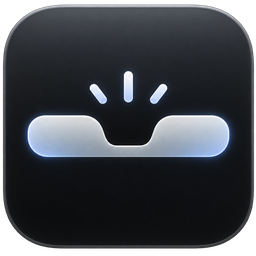

Notchficator
NATIVO PARA macOS
Seu vídeo continua.
Seu trabalho também.
Mini vídeo ao vivo no notch.
Hoje, 09:41
O próximo capítulo.
Uma ideia de cada vez.
Um pouco de espaço para criar.
✓ Encontrar uma nova perspectiva
Deixar as ideias acontecerem
Fazer algo que vale a pena
Seu vídeo, em segundo plano.
☺◉
Demonstração ilustrativa
notchficator.app